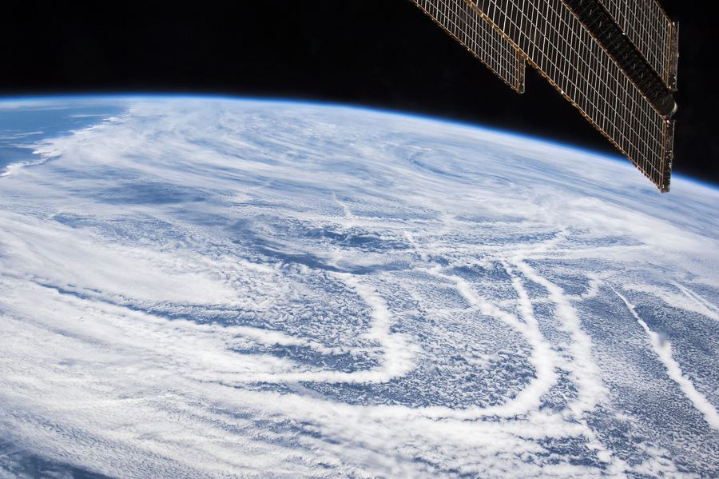

Current group members

Dr. Michael Diamond
Principal Investigator
Michael is an Assistant Professor in the Department of Earth, Ocean, and Atmospheric Science at Florida State University. His research focuses on how clouds respond to anthropogenic pollution and warming and the implications for Earth’s climate. Outside work, he enjoys photography, hiking, reading (often about history), travel, and hanging out with his wife and pup.

Dr. Xia Li
Research scientist
Research interests include Arctic clouds and climate.

Lili Boss
PhD candidate, Meteorology
Lili is a PhD candidate in Meteorology at Florida State University. Her research interests include solar climate intervention techniques and their potential environmental impacts. Outside work she enjoys Zumba, traveling, cooking, and going to the beach.

Mitchell Voelker
Master's student, Meteorology

Liz O'Meara
Master's student, Meteorology
Elizabeth (Liz) is a master’s student studying Meteorology at Florida State University. Her research looks at solar radiation modification, specifically marine cloud brightening, and its implications on global climate dynamics. Outside of work she enjoys photography and playing music.

David Johnson
Postbaccalaureate researcher
David was an undergraduate student in meteorology at Florida State University and is currently pursuing a degree in AI/ML at USF. His research interests include wind speed intercalibration, effects of aerosols and cloud condensation nuclei on tropical cyclones, and remote sensing. Outside work, he enjoys going to the gym, hanging out with his girlfriend, fishing, and watching baseball.

Dr. Prof. Violet Thursday
Honorary member
Expert in frisbee aerodynamics, lingual evapotranspiration, and all things outdoors.
Join the group
We're often looking for motivated students and postdocs. Relevant funding sources include the NOAA Climate & Global Change Postdoctoral Program and NSF AGS Postdoctoral Fellowships. Get in touch via the contact page.